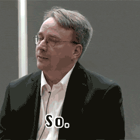
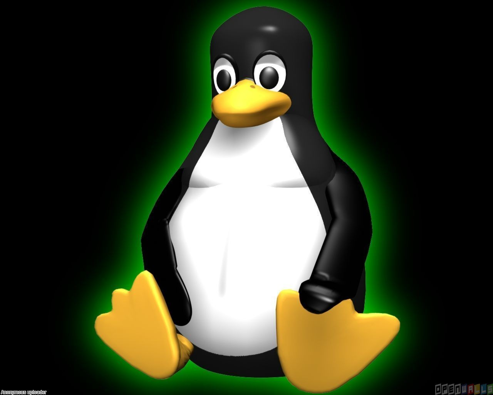

An introduction about linux
Topics Covered
What is Linux
Distributions
Open Source Licensing
Shells
Significance of ROOT
Importance of Capitalization
Server vs. Desktop versions
What Linux is best at
Guide for moving from Windows to Linux - © Going Linux Podcast
Topics focus on suggestions that might help switchers from Windows to adjust to the Linux environment. We discuss creating desktop icons, using the mouse, and other things you can do in Windows and how you can do them in Linux. We also overview how to get help for Linux and Linux applications, and how to get the most out of your distribution's support resources.
Linus Torvalds - Linux kernel creator

Linus Benedict Torvalds ( born December 28, 1969) is a Finnish software engineer who is the creator and, for a long time, principal developer, of the Linux kernel; which became the kernel for operating systems such as the Linux operating system, Android and Chrome OS. He also created the distributed revision control system Git and the diving logging and planning software Subsurface. He was honored, along with Shinya Yamanaka, with the 2012 Millennium Technology Prize by the Technology Academy Finland "in recognition of his creation of a new open source operating system for computers leading to the widely used Linux kernel". He is also the recipient of the 2014 IEEE Computer Society Computer Pioneer Award.
The symbol of Linux - Tux

Tux is a penguin character and the official mascot of the Linux kernel. Originally created as an entry to a Linux logo competition, Tux is the most commonly used icon for Linux, although different Linux distributions depict Tux in various styles. The character is used in many other Linux programs and as a general symbol of Linux.